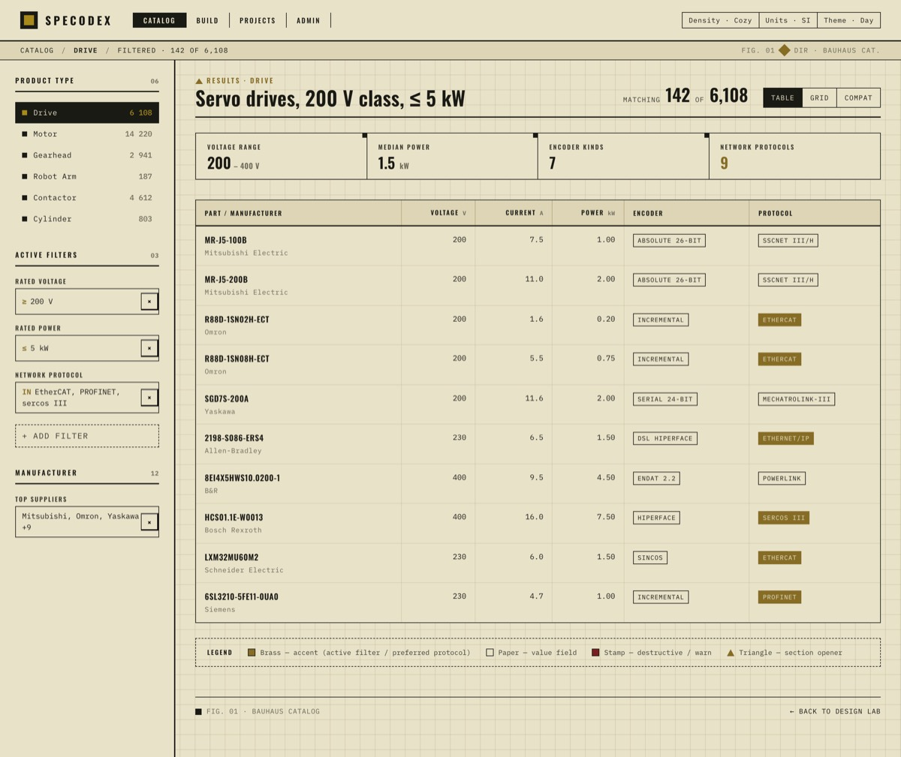
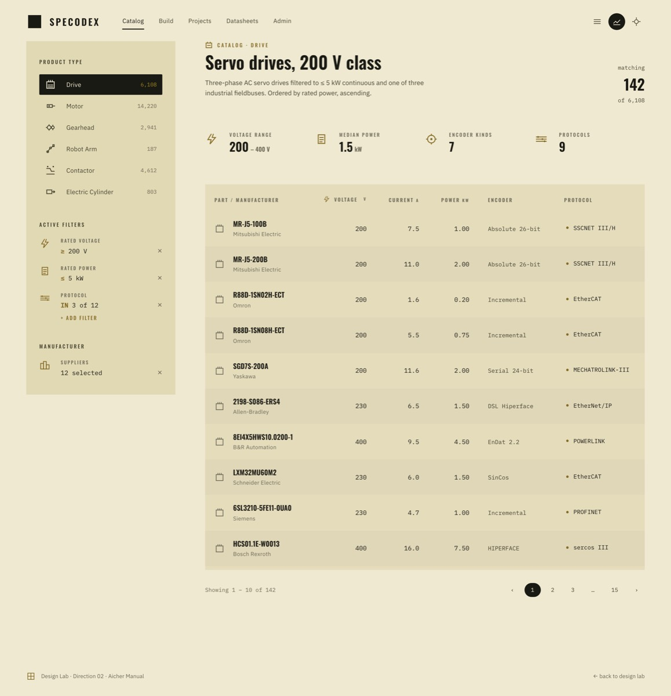
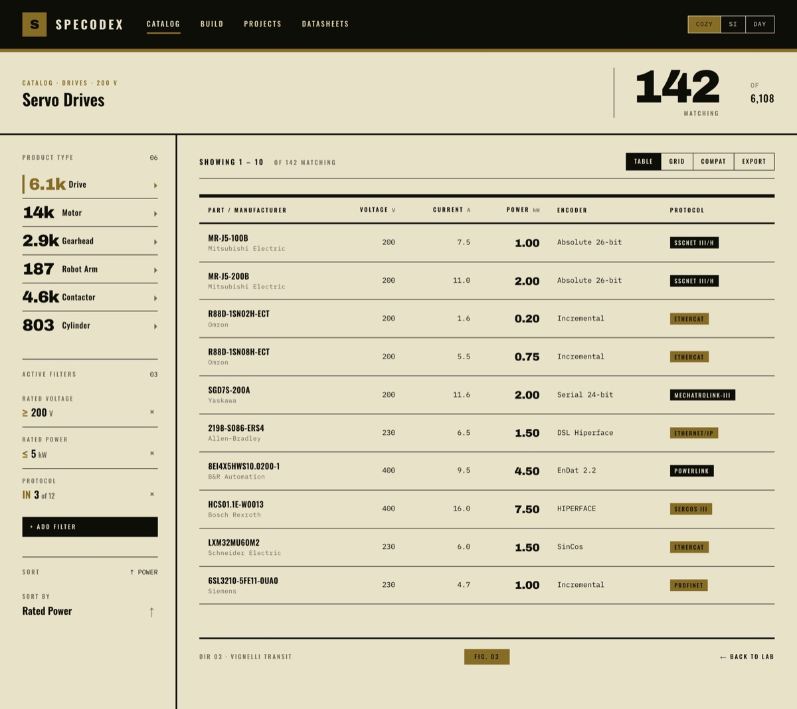

▮▮▮ PULL REQUEST #136 ▮▮▮
Three design directions for the UI refresh.
The product UI is janky — rigid 380px
sidebars, ellipsis-clipped filter chips, eight different
z-index values, !important patches — but
the field-manual aesthetic itself is correct. Before
propagating a fix into the React app, this PR ships
three standalone HTML directions that render the same
mocked drives table three different ways. Lock the
direction in one round, port to React in the next.
▮▮▮ THE THREE DIRECTIONS ▮▮▮

Bauhaus Catalog
DIR 01

Aicher Manual
DIR 02

Vignelli Transit
DIR 03
- DIR 01 — Bauhaus Catalog. Strict 12-column grid, hairline rules, ALL-CAPS section labels, geometric markers (triangle / square / circle) pulled through the brass-and-stamp palette. Subtle graph-paper background the content actually aligns to. Closest in spirit to the current React app — sharper edges, fewer surprises.
- DIR 02 — Aicher Manual. Otl Aicher's 1972 Munich aesthetic. Pictogram-led left rail (one inline SVG icon per product type and per metric), wide gutters, no visible rules — separation is by negative space and gentle zebra striping. Density via icons, not labels. Most distinct departure; would need an icon library investment.
- DIR 03 — Vignelli Transit. Vignelli's NYC subway diagrams meet a Knoll catalog. Heavy 3-6px rule weights between sections, oversized Archivo Black numerals (
6.1k,14k,142) as the visual hierarchy, one bold accent color, tight tracking on every header. Loudest of the three; most memorable.
▮▮▮ WHAT STAYS CONSTANT ▮▮▮
- Palette across all three: paper
#E8E2C9, ink#1A1A14, OD#3A2C1C, brass#866C25, stamp red#7A1F1F. Already shared between docs and React app today. - Type stack: Oswald (display) + IBM Plex Mono (body). Each direction adds at most one supporting family for its signature element — Archivo Black for Vignelli's numerals, IBM Plex Sans for Aicher's UI labels. Bauhaus uses Oswald + Plex Mono only.
- Tabular numerals everywhere: every numeric column uses
font-variant-numeric: tabular-nums. The "things don't line up" complaint in the current app is partly because some columns inherit proportional figures. - The "no native chrome" rule: every primitive shown (filter chips, dropdowns, toolbars, popovers) renders without OS chrome — same constraint as
CLAUDE.mdtoday. - Dark theme: not rendered. Derivable from the espresso variant the React app already has.
▮▮▮ FILES TOUCHED ▮▮▮
| File | Lines | Note |
|---|---|---|
docs/design/index.html | +214 | Landing page with thumbnail previews of each direction |
docs/design/bauhaus-catalog.html | +829 | DIR 01 — strict grid, hairlines, geometric markers |
docs/design/aicher-manual.html | +877 | DIR 02 — pictogram rail, wide space, no rules |
docs/design/vignelli-transit.html | +776 | DIR 03 — heavy rules, oversized Archivo Black numerals |
docs/design/img/{bauhaus,aicher,vignelli}.jpg | +460 KB | 1200 px-wide JPEG previews used by the lab index and this PR doc |
docs/index.html | +2 | Band nav links to DESIGN LAB |
▮▮▮ WHAT THIS ISN'T ▮▮▮
- Not a React-app refactor. The actual product UI under
app/frontend/is untouched. The plan: Nick picks a direction here, a follow-up PR ports the chosen direction's tokens, spacing, and primitives into the React app. - Not exhaustive. Each direction shows one page — header + filter rail + stat block + 10-row results table + footer. Modal, build page, datasheet admin, and the projects views are deferred to the port PR.
- Not auto-mergeable. Draft on purpose. It's design work that needs a human eye, not a CI gate.
▮▮▮ HOW TO REVIEW ▮▮▮
- Local.
cd docs && python3 -m http.server 8765, then openhttp://127.0.0.1:8765/design/. Click into each direction. Three tabs side-by-side reads cleanly. - Hosted (post-merge). GitHub Pages auto-deploys to
…/design/when the PR merges. - What to evaluate. (1) Does the personality survive? (2) Is the density correct? (3) Does the type hierarchy survive the zoom-in test (try Cmd-+ and -)? (4) Which direction would you not get tired of after six months?